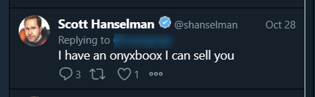
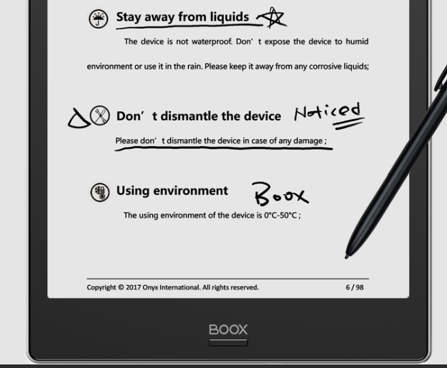
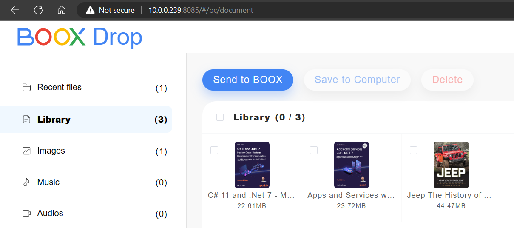

I have to admit, I am not a real book reader, and the bit of reading I am doing typically involves Azure-related tech books, or what my wife and family describes as “business books” (Biographies, Non-fiction company stories such as the start of Netflix, Uber, Silicon Valley,…). For several years, I relied on an Amazon Kindle app on my (cheap) Samsung A8 tablet, dating from the time I was traveling weekly and wanted to travel light. While it still runs fine, the 8" form factor is sometimes a bit small - especially when screenshots of development code are involved - and I was also missing the capability to take notes (apart from the basic notes in Kindle app).
Apart from reading e-books, I’m also a big fan of Moleskine writing pads and pens, especially their Smart Writing System Kit, which comes with a Bluetooth-enabled pen, yet is just like a regular ink-based pen, and allows for your writings to be stored electronically per page.
But for a long time, it felt like having 2 devices was too much, since I was taking notes using Moleskine, while reading from the Samsung. Often, I didn’t have both devices with me (reading books in the bedroom, where the Moleskine was in my office…)
I honestly had my eyes on e-reader devices for a while, specifically Remarkable. However, as I would mainly use that device for reading, I found them too expensive and couldn’t spend the money on it (other expenses too, you know…)
Until I spotted a Twitter post from Scott Hanselman, offering an Onyxboox Note Air 2 for sale. This was another device I had my eyes on for a while.

So when I saw this post, I DM-ed Scott and the nice gentleman he is, we easily closed the deal, for a price I was willing to pay (and I still owe him a lunch/dinner too).
As soon as it arrived in the mail a few days later, I started using it. What pulled me in, was the Onyx Boox Reader feature, which allowed me to read my traditional PDF-documents, but - more important - allowing me to take handwritten notes on the side, circling words or parts of a paragraph, to emphasize text parts that are important to remember.

Next to the Boox Reader app, one of the other convenient things about the device is BooxDrop, a built-in app which allows for copying files from your local machine onto the Boox device using just a wifi connection, which is super convenient.

Since the device is running on Android, it also allows for installing about any regular Android App, including Amazon Kindle Reader App. This was a big plus for me, since I’ve been using that platform for buying most of my e-books over the years. The only downside though, is that note-taking is still using the Kindle-way as before, which annoyed me at first (as fluent note-taking on books was one of the things that got me interested in the device since the beginning…); The solution I have in mind for newer books, is switching from buying Kindle format back to PDF, and reading them from the great Boox Reader app.
While I haven’t used it too much for other things than reading, the built-in Notes app almost feels like writing on paper. The complementary pen obviously is a big part of this. It allows for drawing, recognizing different grey-scales depending on how hard you push the pen on the screen, and it also provides handwriting to actual text transformation. I started using the Notes more and more during my day as well, where before I was writing on paper. Often during a training, I get questions from learners, which is a great source for blog post inspiration. Too often though, I threw away those pieces of paper at the end of the week. Now I have them on the device, and can cross them off once the blog post is published.
One last thing I want to highlight, is the great battery-life of the Onyx Boox. Even with an average reading-time of about an hour per day, the battery lasts for weeks. I can’t even remember when I charged the device for the last time… maybe not even since I got it to be honest.
I want to thank Scott for his kindness and convincing me about several features of the device in DMs before I deciced to buy it. I can say that Scott made me read more books; heck that would have been a hell of a blog post title :)
I have to go now, as I am just starting my next book, C#11 and .NET 7 development.
If you have been looking for a convenient E-reader with some additional note-taking features, I can definitely recommend the OnyxBoox Note Air 2 product. More info can be found on The Onyx website.

Cheers!!
/Peter